Så förbereder och leder du Vakttornsstudiet och blir klar i tid
Version 4.0 · november 2026
⚠ Två viktiga varningar
Led alltid från den ursprungliga publikationen. Appen visar styckena och frågorna bara för att beräkna tiderna. Den som leder får aldrig förlita sig på innehållet som visas i timern: när du presenterar stoffet för åhörarna ska du alltid använda appen JW Library eller den tryckta tidskriften Vakttornet.
Använd presentationsläget under studiet. Det är det rekommenderade sättet att använda timern när du leder, eftersom det undviker distraktioner: det visar bara det du behöver, med grönt, gult och rött så att du med en blick ser hur det går med tiden, och stora knappar som är lätta att trycka på för att gå till nästa stycke och registrera kommentarer (punkt 9).
Studietimer hjälper brodern som leder Vakttornsstudiet att fördela tiden väl och bli klar i tid.
Du laddar in veckans artikel som PDF, och appen
läser artikeln och hittar styckena, frågorna, skriftställena som ska läsas, bilderna, fotnoterna och repetitionsfrågorna.
beräknar hur mycket tid varje del ska få: inledningen, varje stycke, repetitionen och avslutningen.
vägleder dig under studiet med en timer för varje stycke och färger som visar om du är i tid, i extratid eller över tiden.
justerar sig själv: om ett stycke drar över fördelar den återstående tid på de följande styckena, så att du blir klar i tid.
Inofficiell app. Det är ett gratis, fristående projekt. Det är ingen officiell publikation och har ingen koppling till jw.org eller till Jehovas vittnens organisation. Artikeln analyseras på din egen enhet: den skickas inte till och lagras inte på någon server.
Bilderna i den här bruksanvisningen använder en påhittad exempelartikel, inte en verklig artikel ur Vakttornet.
2Installera appen
Appens ikon är en orange bok med en färgad skala (grön, gul och röd) på svart bakgrund.
Ikonen
Android-telefon eller surfplatta
Öppna Google Play.
Öppna den här länken: öppna i Google Play (eller sök efter appen i Google Play).
Tryck på Installera.
Om du redan använder appen i webbläsaren på en Android-enhet visar startskärmen det gröna kortet ”Använder du Android?” med knappen ”Öppna i Google Play”.
iPhone och iPad
Den finns inte i App Store än, men den fungerar lika bra från webben:
Tryck på knappen Dela (rutan med en pil som pekar uppåt).
Välj ”Lägg till på hemskärmen” och tryck på Lägg till. Ikonen visas på din skärm.
Dator
Öppna temporizador-estudio.vercel.app i Chrome eller Edge. Om du vill kan du installera den som ett program med installationsikonen i adressfältet.
Uppdateringar: när det finns en ny version visas meddelandet ”En ny version av appen finns.” Tryck på Uppdatera. Appen uppdaterar sig aldrig själv mitt i ett studium.
3Startskärmen
Det här är det första du ser när du öppnar appen. De röda siffrorna på bilden visar var allt finns.
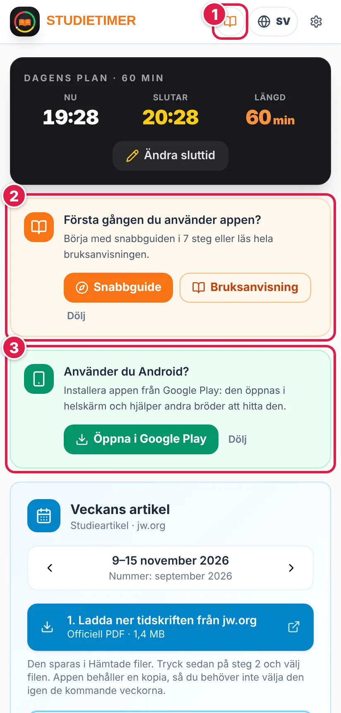
Startskärmen.
Bokknappen: öppnar den här bruksanvisningen när som helst.
”Första gången du använder appen?”: öppnar snabbguiden eller den här bruksanvisningen. När du känner till appen trycker du på Dölj.
”Använder du Android?” (bara på Android-telefoner som använder webbläsaren): installera appen från Google Play. Kortet kan också döljas.
Längre ner hittar du
Dagens plan: klockan nu, när studiet slutar och dess längd.
Veckans artikel: för att ladda ner tidskriften och öppna den (punkt 4).
Kretstillsyningsmannens besök: reglaget för studiet på 30 minuter (punkt 13).
Inställningar för studiet: en sammanfattning av dina inställningar, med länken Ändra.
Längst ner: länkar till integritet, bruksanvisningen, Google Play och studiehistoriken.
Överst finns också språket (SV) och inställningarna⚙.
4Ladda in veckans artikel
Kortet ”Veckans artikel” visar den aktuella veckan (till exempel 9–15 november 2026) och vilket nummer av Vakttornet den finns i. Med pilarna ‹› kan du välja en annan vecka.
”1. Ladda ner tidskriften från jw.org” öppnar den officiella PDF:en av rätt nummer. På Android sparas den i Hämtade filer; på iPhone trycker du på Dela → ”Spara i Filer”.
”2. Välj PDF:en du laddade ner”: välj den filen. Appen letar i tidskriften efter artikeln för den valda veckan och analyserar den. Efter att du har tryckt på steg 1 blir den här knappen grön när du kommer tillbaka till appen (”Nedladdad? Tryck här för att öppna den”): ett tryck räcker.
Vakttornet laddas ner på det språk som appen har. Om appen är på svenska laddas den svenska utgåvan ner; om den är på norska, den norska, och så vidare för alla språk. Vill du ladda ner ett annat språk ändrar du först språket i appen (punkt 14).
Appen sparar en kopia av tidskriften. Nästa veckor i samma nummer öppnas direkt med ”Öppna veckans artikel”, utan att du behöver ladda ner något igen. Sparade tidskrifter raderas automatiskt 3 månader efter sin sista vecka.
På en dator kan du också dra PDF:en var som helst på startskärmen (meddelandet ”Släpp PDF:en av Vakttornet här” visas) eller välja mappen där du har tidskrifterna, så hittar appen dem själv.
Står det att tidskriften inte är publicerad än? jw.org publicerar varje nummer några veckor i förväg. Om du väljer en vecka långt fram i tiden finns den kanske inte än.
5Sammanfattningen och studieplanen
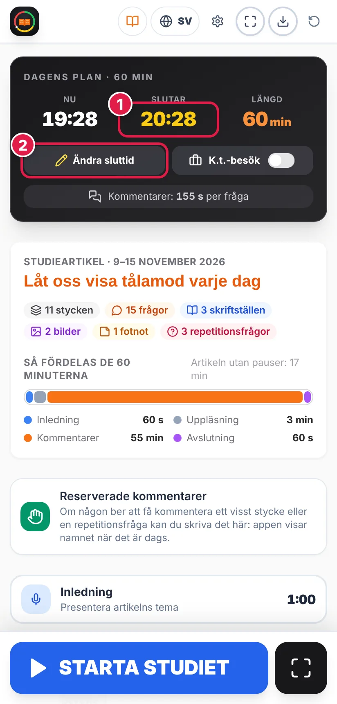
Dagens plan.
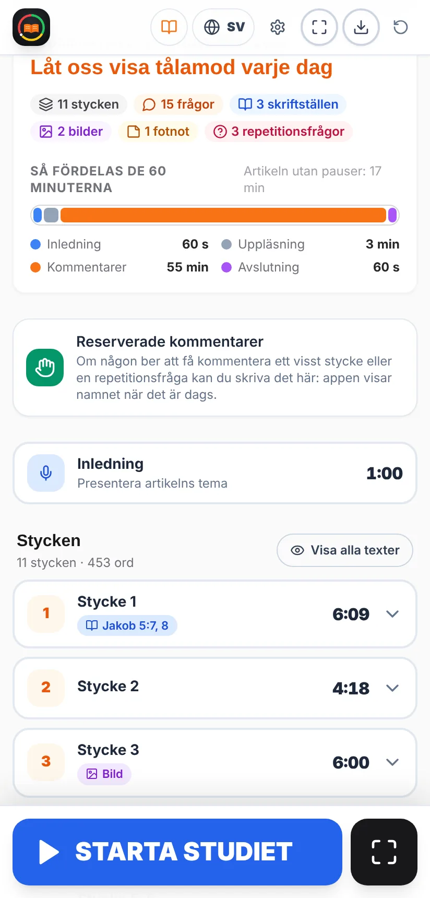
Sammanfattningen av artikeln.
Sluttid: när studiet slutar.
”Ändra sluttid”: använd den när det offentliga föredraget drar över (se rutan nedan).
När ska jag ändra sluttiden? Mötet varar i 1 timme och 45 minuter: sång och bön (5 min), offentligt föredrag (30 min), sång (5 min), Vakttornsstudiet (60 min) och avslutande sång och bön (5 min).
Om föredraget drar över tas de minuterna från Vakttornsstudiet. Innan du börjar studiet trycker du på ”Ändra sluttid” och anger när studiet måste sluta för att mötet ska sluta i tid (5 minuter före slutet, för sång och bön). Allt beräknas om för att bli klart vid den tiden.
Om föredraget slutar i tid eller tidigt ändrar du ingenting: studiet varar sina 60 minuter och mötet kan sluta lite tidigt, men aldrig sent. Därför gör appen aldrig studiet längre än inställt.
Ännu bättre: ange när det offentliga mötet börjar. Under Inställningar → Tid anger du en gång när mötet börjar (till exempel 10.00). Appen räknar själv ut när studiet måste sluta: 10.40–11.40, eller 10.40–11.10 under kretstillsyningsmannens besök. Om föredraget drar över blir studiet kortare av sig självt, och du behöver inte trycka på ”Ändra sluttid”. Om du inte anger det händer inget fel: studiet varar den inställda tiden (60 minuter) från det att du trycker på ”Starta studiet”, och du kan fortfarande använda ”Ändra sluttid”.
Nedanför visar sammanfattningen av artikeln
rubriken och veckan.
hur många stycken, frågor, skriftställen, bilder och fotnoter den har.
en färgad stapel som visar hur tiden fördelas: InledningUppläsningKommentarerAvslutning.
Planen visar också ”Kommentarer: X s per fråga”: den genomsnittliga tiden för att besvara varje fråga.
Om artikeln inte ryms inom den valda tiden ser du en varning. Du kan göra studiet längre eller välja en snabbare läshastighet i Inställningar.
6Listan över stycken
Varje stycke visas på en rad med sitt nummer och sin planerade tid. Tryck på ett stycke för att öppna det.
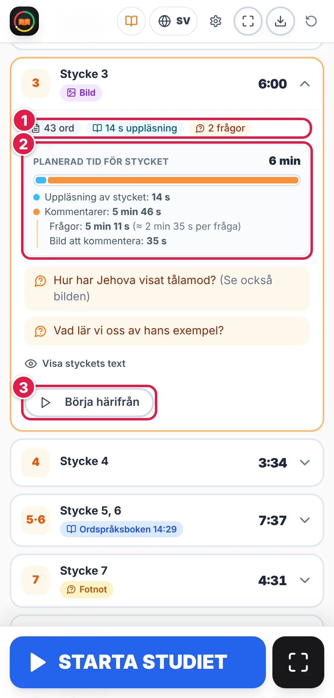
Ett öppet stycke.
Detaljer om stycket, var och en i sin färg: ord (grått), uppläsningstid (blått) och frågor (orange). Under studiet visas också den planerade klockslaget (lila).
Planerad tid för stycket: totalen och hur den fördelas. Stapeln visar uppläsningen av stycket (blått), kommentarerna (orange) och, för långa stycken, extra tid för fler kommentarer (grönt). Om det finns ett skriftställe att läsa, en bild eller en fotnot kommenteras det av åhörarna: det visas under kommentarerna, under frågorna (till exempel ”Skriftställe att läsa: 35 s”). Delarna blir tillsammans totalen.
”Börja härifrån”: om studiet redan har börjat (till exempel om du kommer sent) hoppar du till det här stycket. Det fungerar också under studiet: om ni har gått vidare till ett annat stycke och du glömde att trycka på ”Nästa”, öppnar du stycket ni är på och trycker på ”Börja härifrån”. Klockan nollställs inte: start- och sluttiden förblir desamma, appen fortsätter att räkna den verkliga tiden och fördelar det som är kvar på de återstående styckena.
De färgade etiketterna visar vad du behöver tänka på:
Etikett
Vad den betyder
Jakob 5:7, 8
Det finns ett skriftställe att läsa.
Bild
Frågan hänvisar till en bild i artikeln.
Fotnot
Det finns en fotnot att kommentera.
★ Huvudpunkt
Frågan nämner en ruta eller en tanke inom citattecken.
Med ”Visa styckets text” kan du läsa texten när du förbereder tiderna. När du leder använder du alltid den ursprungliga publikationen.
Stycken som har en gemensam fråga (till exempel ”5, 6”) hör ihop, och knappen Nästa hoppar över hela gruppen.
Reserverade kommentarer
Ibland ber någon innan ni börjar att få kommentera ett visst stycke eller en repetitionsfråga. Skriv in det på kortet ”Reserverade kommentarer”, som visas när artikeln är inladdad:
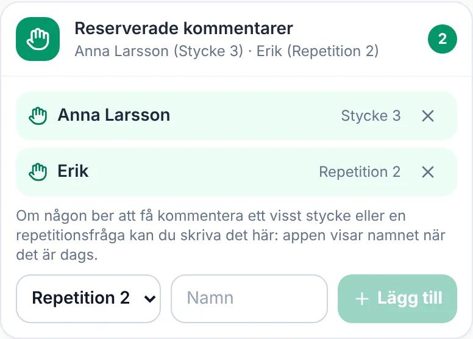
Två reserverade kommentarer.
Välj stycket eller repetitionsfrågan.
Skriv in namnet och tryck på Lägg till.
Tryck på ✕ för att ta bort det.
När det stycket eller den frågan kommer ser du namnet på kortet som pågår, och i presentationsläget i en väl synlig vit ruta (punkt 9). Namnen sparas bara på din enhet, tillsammans med den artikeln.
7Leda studiet steg för steg
Rekommenderas: använd presentationsläget under studiet (punkt 9). Här ser du hur det fungerar; det är likadant i båda vyerna.
På telefonen finns huvudknapparna alltid längst ner:
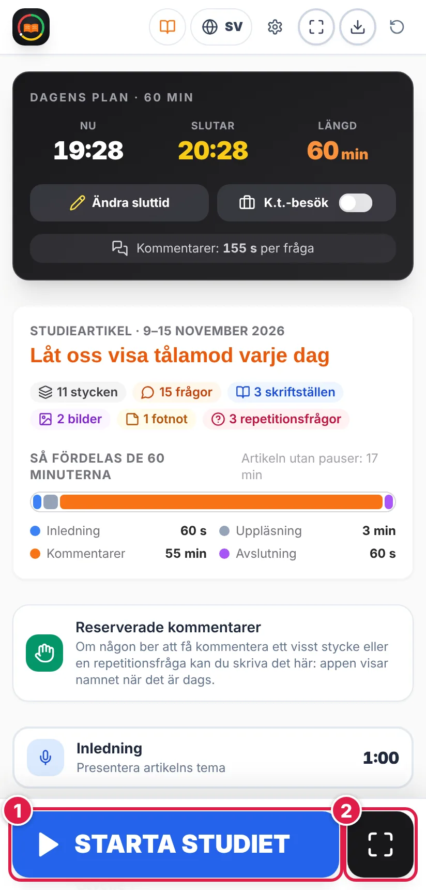
Innan ni börjar.
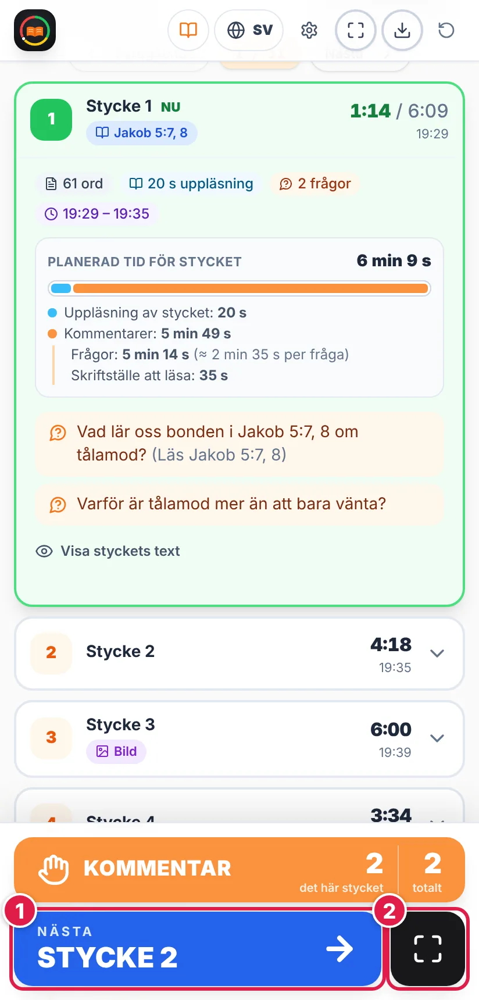
Under ett stycke.
Stor blå knapp: den visar vad som kommer sedan. Tryck på den varje gång ni går över till en ny del: Starta studiet → Stycke 1 → Stycke 2 → … → Repetition → Avslutning → Avsluta studiet.
Svart knapp⛶: öppnar presentationsläget.
Under styckena visas också den orange knappen ✋ KOMMENTAR: tryck på den varje gång någon kommenterar. Till sist ser du hur många kommentarer det blev.
Inledning. Tryck på ”Starta studiet”. Huvudtidtagaren och tidtagaren för inledningen startar.
Stycken. Tryck på Nästa när varje stycke börjar. Du ser använd tid av planerad tid (till exempel 1:14 / 6:09) och färgen (punkt 8).
Repetitionsfrågor. Efter det sista stycket kommer frågorna i rutan i slutet.
Avslutning. Den varar exakt den tid som är kvar till sluttiden: om det finns tid över använder den allt, även om det är mer än minuten i Inställningar, och om det finns mindre blir den kortare. Om sluttiden passeras blir den röd.
Avsluta studiet. Tidtagaren stannar och studierapporten sparas (punkt 15).
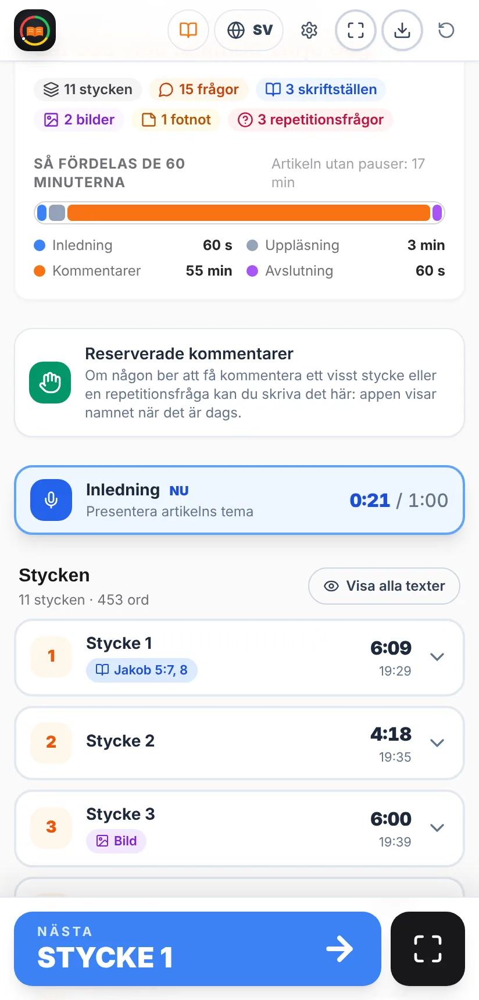
Inledningen pågår.
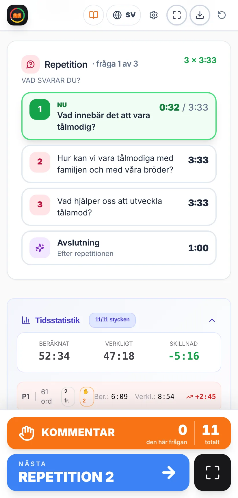
Repetitionsfrågor.
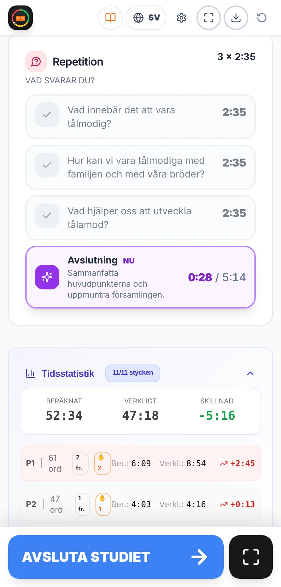
Avslutning.
Med knappen ⏸ i planen kan du pausa tidtagaren om det blir ett avbrott. Under pausen stannar klockan för den del som pågår, men sluttiden flyttas inte: den återstående tiden fortsätter att minska, eftersom mötet slutar i tid.
Studielinje
I klockpanelen visar en tunn linje hela studiet på en rad: inledning, varje stycke eller grupp, repetition och avslutning. Varje del är lika lång som sin planerade tid.
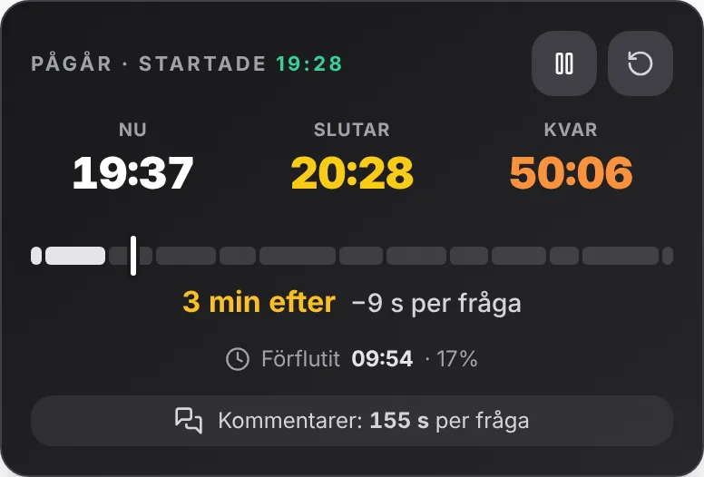
3 minuter efter i stycke 1.
Vitt: det ni har gjort. Grått: det som är kvar.
Strecket: var ni borde vara enligt klockan. Det flyttar sig självt.
Nedanför: ”I tid”, ”2 min efter” eller ”1 min före”. Om ni ligger efter ser du också hur mycket varje återstående kommentar skulle förlora om ni inte tar igen det (till exempel ”−9 s per fråga”).
Den jämför med planen som gjordes när studiet började, så att det syns direkt om ni kommer efter i de första styckena, inte först i slutet. Under 1 minut står det ”I tid”, och texten ändras bara en gång i minuten så att den inte distraherar. Du kan stänga av den under Inställningar → Skärm → ”Studielinje”.
8Färgerna: grönt, gult och rött
Kortet för det som pågår (stycke, inledning, repetitionsfråga eller avslutning) byter färg efter hur lång tid som har gått:
Färg
När
Vad du ska göra
I TID
Upp till den planerade tiden.
Allt är bra: fortsätt.
EXTRATID
Den har dragit över sin tid, men inte med mer än 30 %.
Börja runda av kommentarerna.
ÖVER TIDEN
Mer än 30 % över den planerade tiden.
Gå vidare till nästa stycke.
I tid.
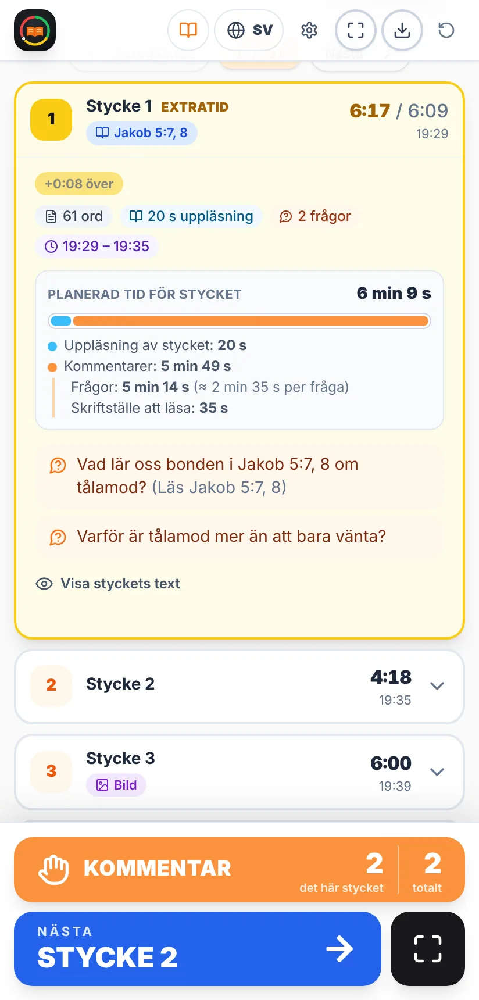
Extratid, med hur mycket den har dragit över.Över tiden.
Under studiets sista 5 minuter har stycken och repetitionsfrågor ingen extratid: de går direkt från grönt till rött, så att de inte äter upp tiden i slutet. Avslutningen behåller alltid sin extratid.
Om en del drar över behöver du inte oroa dig: när du trycker på Nästa fördelar appen den återstående tiden på det som är kvar, så att du blir klar i tid.
Knappen ”Nästa” varnar dig också
När den del som pågår blir röd ändras också den stora knappen för att gå vidare, så att du märker det utan att leta:
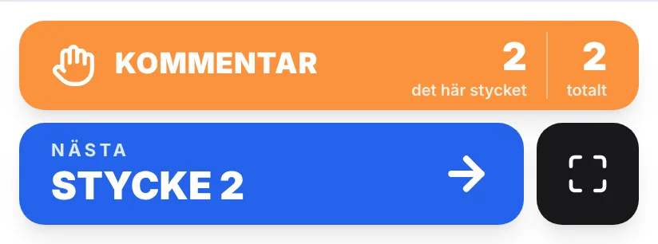
Röd: tiden kan fortfarande tas igen.
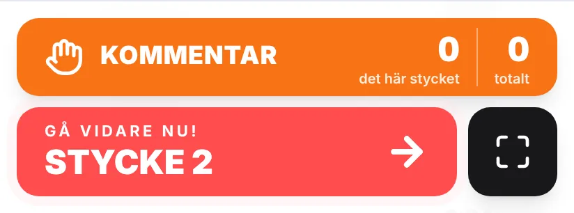
Blinkar: gå vidare nu.
Röd knapp: delen har dragit över, men tiden kan fortfarande tas igen i det som är kvar. Börja runda av kommentarerna.
Röd blinkande knapp med ”Gå vidare nu!”: det finns ingen mer tid att ta igen (det skulle bli mindre än 30 sekunder för varje återstående fråga, eller så är ni inne på de sista 5 minuterna). Gå vidare så fort du kan.
I presentationsläget blir knappen vit med röda bokstäver, så att den syns mot alla bakgrundsfärger.
Om du inte vill ha den stänger du av den under Inställningar → Varningar → ”Röd ’Nästa’-knapp”.
9Presentationsläget
Det här är det rekommenderade sättet att leda studiet. Det visar bara det du behöver, med stor text och stora knappar, och färgen visar med en blick hur det går med tiden.
Öppna det med knappen ⛶ längst ner och stäng det med ✕ överst (eller med telefonens ”tillbaka”-knapp, utan att lämna appen).
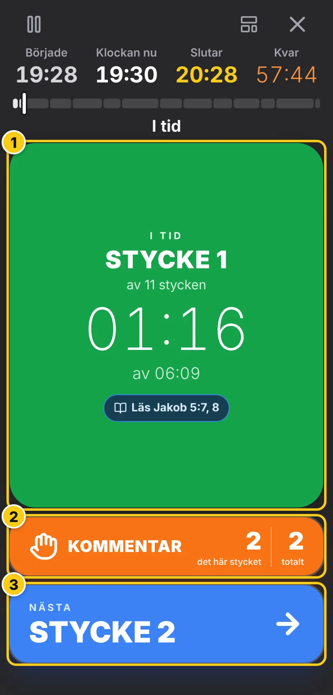
Presentationsläget under ett stycke.
Färgad ruta: var ni är (till exempel Stycke 1), tidtagaren för den delen och dess planerade tid. Grön, gul eller röd beroende på hur det går.
Kommentar: tryck på den varje gång någon kommenterar. Till vänster ser du kommentarerna i det här stycket (eller den här frågan) och till höger totalt.
Nästa: går vidare till nästa del. Knappen visar vad som kommer.
Reserverad kommentar: om du har reserverat en kommentar för den del som pågår visas namnet med stora bokstäver i den färgade rutan. Om den är för nästa del ser du den nedanför som ”Nästa: …”, så att du inte missar den.
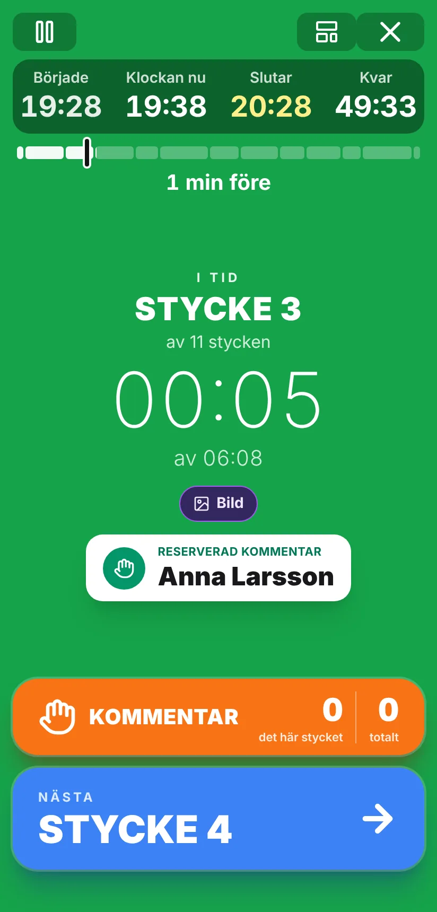
Reserverad kommentar i stycke 3.
Studielinje: samma linje som i punkt 7 visas under tiderna, i alla tre utseendena.
Överst ser du när studiet började, klockan nu, när det slutar och hur mycket tid som är kvar.
Det finns tre utseenden. Byt med knappen ▦ överst eller under Inställningar → Skärm:
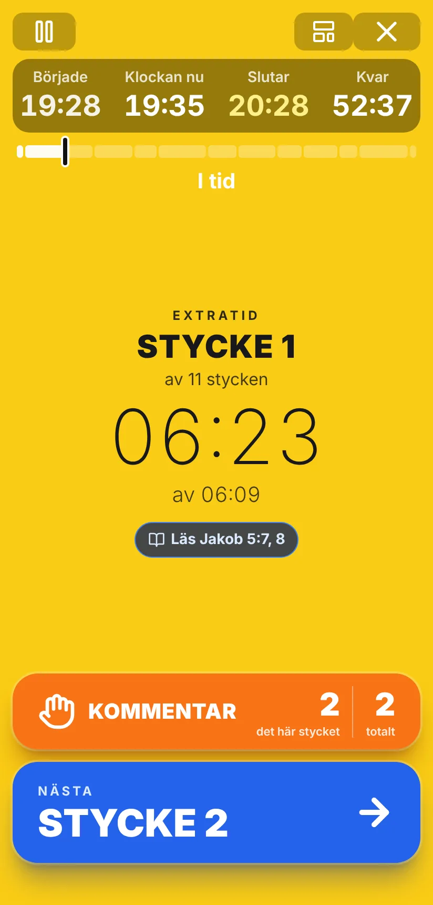
Trafikljus: hela skärmen byter färg.
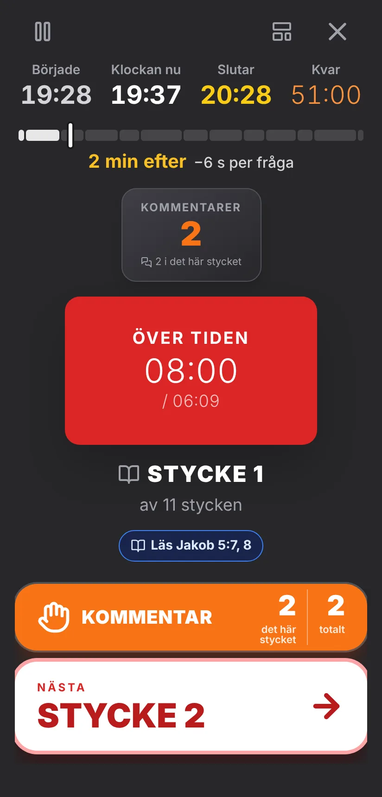
Klassisk: med kommentarräknaren.
Till sist står det ”Avsluta studiet” på den stora knappen och sedan ”Visa rapporten”.
10Så beräknas tiderna
Uppläsning av varje stycke = dess ord ÷ läshastigheten (150, 180 eller 210 ord per minut). Varje skriftställe, bild, fotnot eller huvudpunkt lägger dessutom till tiden per svar (minst 30 sekunder; 35 som standard) som en kommentar, eftersom åhörarna läser eller kommenterar det.
Inledningen och avslutningen har den tid som är inställd i Inställningar (1 minut var som standard). Avslutningen anpassar sig till sluttiden: om det finns tid kvar efter repetitionen får den allt; om det finns mindre blir den kortare.
Kommentarer: resten av tiden fördelas på alla frågor. Stycken med fler ord får lite mer (det gröna ”extra” i punkt 6).
Fler ord, mer tid för kommentarer: ett långt stycke ger oftast fler kommentarer, utöver svaret på frågan och skriftställena eller bilderna. Därför jämför appen orden i varje stycke med artikelns genomsnitt: de som har fler ord får extra kommentarsturer (upp till 2), och de korta får bara tiden för sina frågor. Grupperade stycken (”Stycke 4, 5”) får inte mer tid bara för att de är grupperade: orden i dem alla tillsammans räknas mot deras frågor. Det sker automatiskt: det finns inget att ställa in.
Under studiet: varje gång du trycker på Nästa beräknas det som är kvar på nytt, så att du blir klar i tid.
Exempel: i ett studium på 60 minuter med 11 stycken och 21 frågor går ungefär 7 minuter till uppläsning, 2 till inledning och avslutning och ungefär 51 till kommentarer: lite drygt 2 minuter per fråga.
11Inställningar
Tryck på ⚙ uppe till höger. Inställningarna sparas på din enhet och är ordnade i fyra flikar:
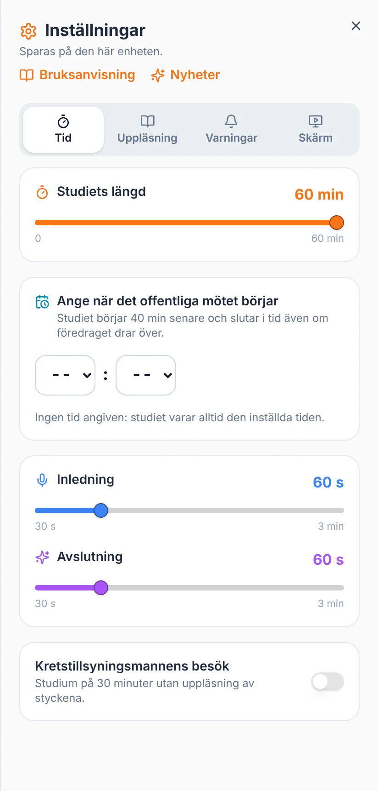
Tid
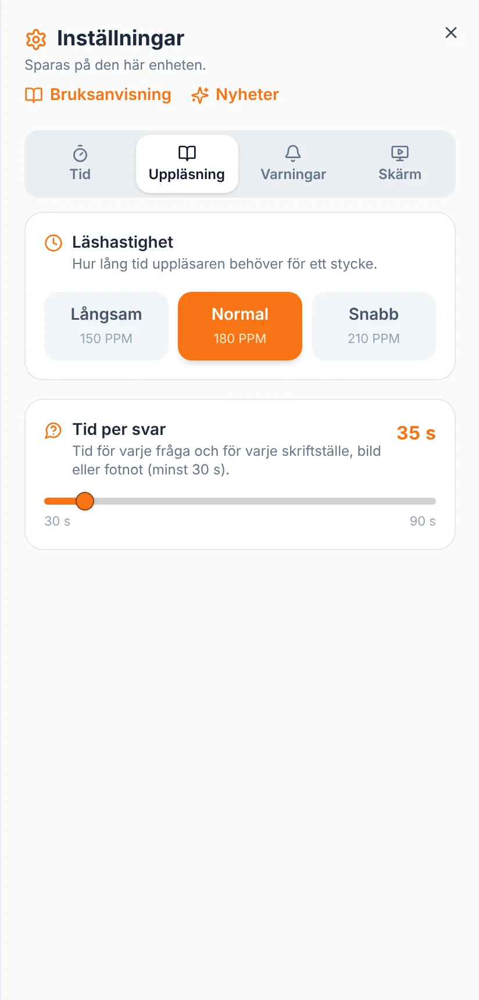
Uppläsning
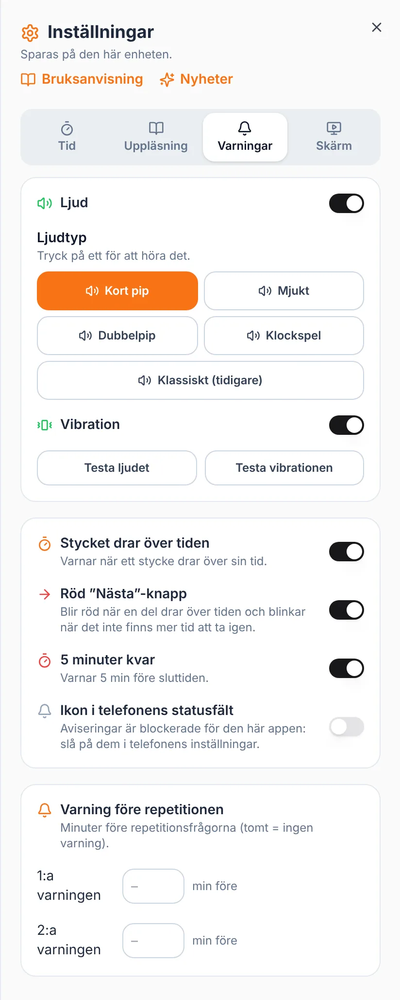
Varningar
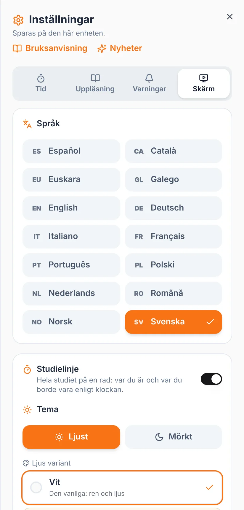
Skärm
Flik
Vad du kan ändra
Tid
Studiets längd (upp till 60 min). Längden på inledningen och avslutningen (30 s till 3 min). Kretstillsyningsmannens besök. När det offentliga mötet börjar.
Uppläsning
Uppläsarens läshastighet: Långsam (150), Normal (180) eller Snabb (210 ord/min). Tid per svar (30 till 90 s; används också för varje skriftställe, bild, fotnot eller huvudpunkt).
Varningar
Ljud och vibration (med knappar för att testa dem). Varningen Stycket drar över tiden, varningen ”5 minuter kvar” och upp till två varningar före repetitionen. Ljudtyp och ikon i statusfältet (punkt 12).
Skärm
Språk, ljust eller mörkt tema (med sex mörka varianter: grafit, AMOLED-svart, nattblå, varm, skogsgrön och aubergine; och sex ljusa: vit, gräddvit, himmelsblå, mintgrön, lavendel och pärlgrå) och utseendet i presentationsläget. Studielinje (på eller av).
Om du ändrar läshastigheten eller tiden per svar medan studiet pågår gäller det från nästa studium.
12Ljud- och vibrationsvarningar
Ljudtyp: välj kort pip (standard, diskret så att det inte distraherar), mjukt, dubbelpip, klockspel eller det tidigare klassiska ljudet. Tryck på vart och ett för att höra det.
Ikon i telefonens statusfält: om du slår på den och byter till en annan app under studiet ser du en liten ikon högst upp på telefonen med sluttiden. Tryck på den för att komma tillbaka till timern. Den är tyst och försvinner när du kommer tillbaka. Första gången frågar telefonen om lov att visa aviseringar.
Stycket drar över tiden: hörs när stycket som pågår drar över sin tid.
5 minuter kvar: 5 minuter före sluttiden, med ljud, vibration och ett meddelande på skärmen.
Före repetitionen: ange hur många minuter före repetitionsfrågorna du vill ha en varning (till exempel 10 och 5). Lämna tomt om du inte vill ha någon.
Lite tid till repetitionen: om det är mindre än 20 sekunder kvar per repetitionsfråga varnar appen dig.
Röd ”Nästa”-knapp: knappen för att gå vidare blir röd när en del drar över tiden och blinkar när det inte finns mer tid att ta igen (punkt 8).
Se till att telefonen inte är på ljudlöst om du vill höra varningarna. Vibration fungerar på Android; på iPhone beror det på webbläsaren.
13Kretstillsyningsmannens besök
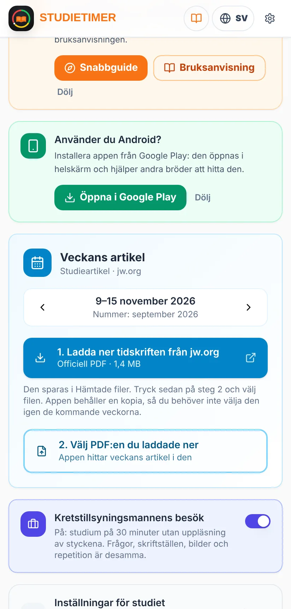
Reglaget påslaget: studium på 30 minuter.
Under besöksveckan slår du på reglaget ”Kretstillsyningsmannens besök” på startskärmen (eller under Inställningar → Tid). Då varar studiet 30 minuter och styckena läses inte: frågorna, skriftställena, bilderna och repetitionen är desamma. Kom ihåg att stänga av det efter besöket.
Den veckan läses inte styckena. I planerad tid för varje stycke visas skriftställen att läsa, bilder och fotnoter under kommentarerna, till exempel ”Skriftställe att läsa” eller ”Bild att kommentera” (i plural om det är flera).
14Språk
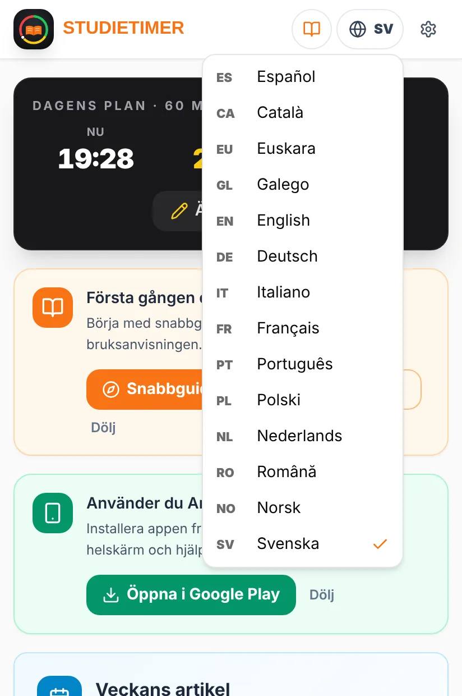
Språkmenyn.
Appen fungerar på spanska, katalanska, baskiska, galiciska, engelska, tyska, italienska, franska, portugisiska, polska, nederländska, rumänska, norska och svenska. Byt språk med jordglobsknappen överst eller under Inställningar → Skärm. När du byter språk
visas hela appen på det språket, med datum och klockslag.
laddar jw.org-knappen ner Vakttornet på samma språk. Appens språk avgör tidskriftens språk.
frågar appen en gång på portugisiska om du föredrar utgåvan för Portugal eller Brasilien. Du kan ändra det senare under Inställningar → Skärm.
Den här bruksanvisningen finns också på alla dessa språk: använd språkknapparna överst.
15När du är klar: rapporten och historiken
När du trycker på ”Avsluta studiet” sparar appen en rapport med tiderna för varje del. Den hjälper dig att se vad som drog över och att göra det bättre nästa gång.
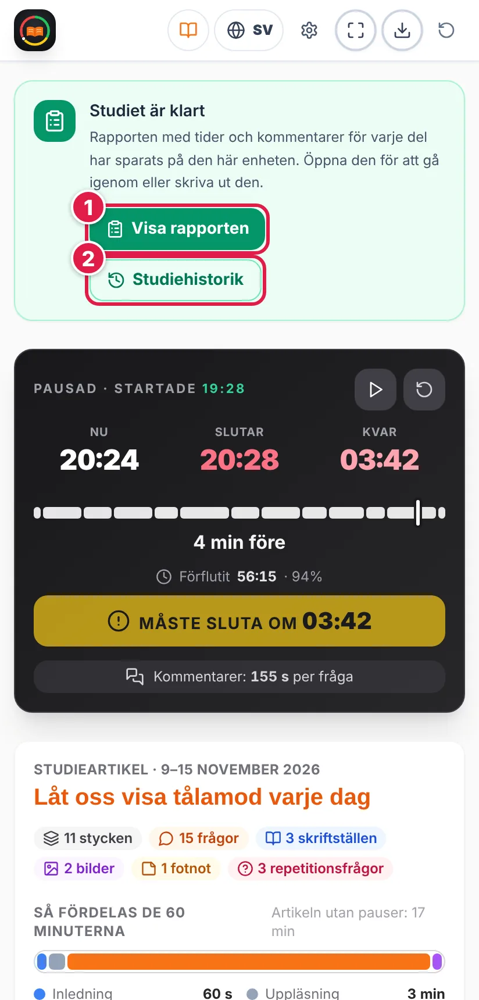
Kortet ”Studiet är klart” visas överst.
Visa rapporten: öppnar rapporten för det här studiet i en egen flik.
Studiehistorik: öppnar listan över alla sparade studier.
Rapporten
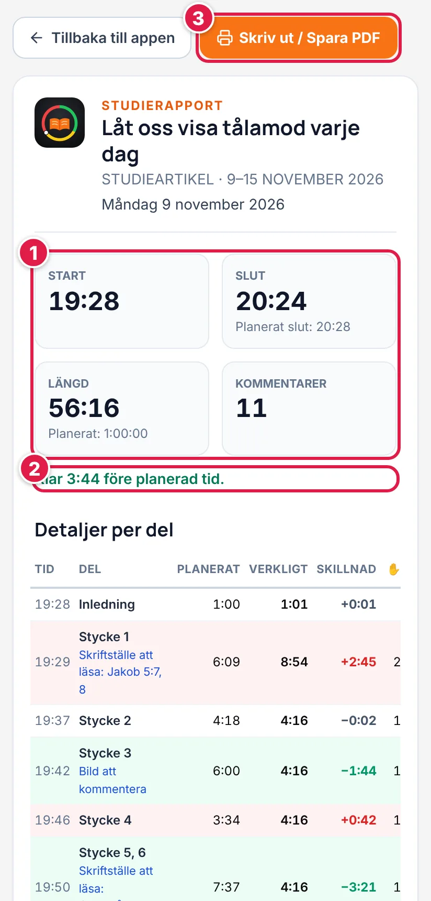
Överst i rapporten.
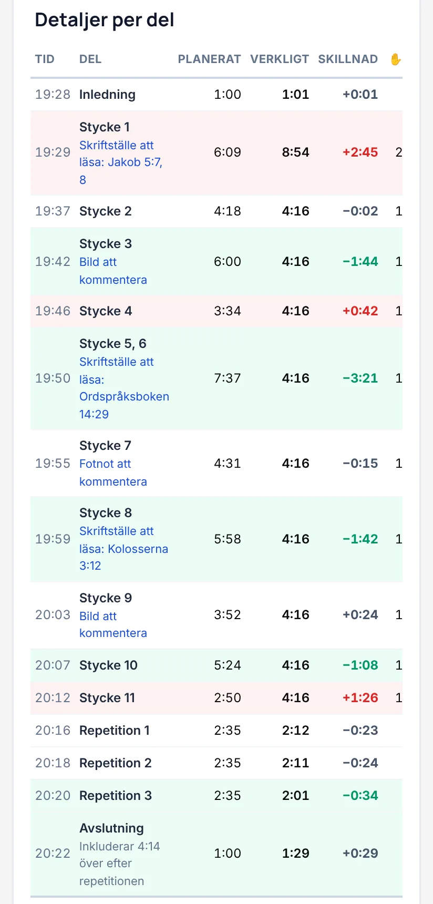
Tabellen med varje del.
Start, slut och längd på studiet, med planerad sluttid och totalt antal kommentarer.
Sammanfattning i en mening, till exempel ”Klar 3:44 före planerad tid.” (i grönt) eller ”efter” (i rött).
Skriv ut / Spara PDF: för att skriva ut den på papper eller spara den som fil.
Tabellen har en rad för varje del: inledning, varje stycke, varje repetitionsfråga och avslutning. På varje rad ser du
klockslaget när den delen började.
Planerat och Verkligt: den planerade tiden och den tid som verkligen användes.
Skillnad: i grönt om det gick snabbare och i rött om det drog över.
✋: kommentarerna du registrerade.
Under varje stycke, i blått: skriftställen att läsa (med hänvisningen), bilder och fotnoter att kommentera.
På en dator och vid utskrift visas också orden och frågorna i varje stycke. Den utskrivna rapporten ryms på en sida.
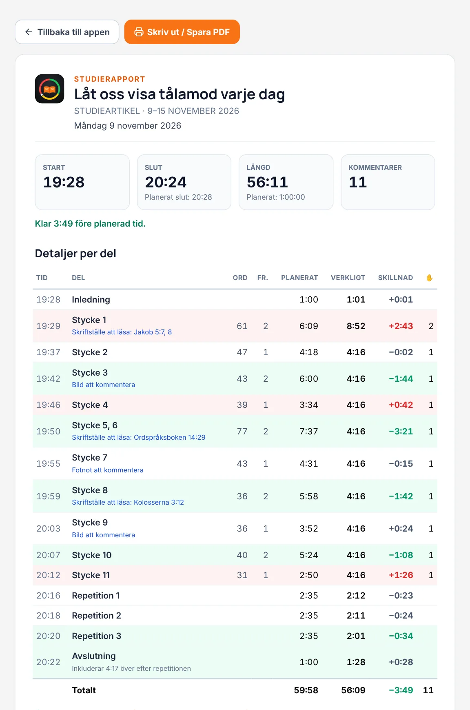
Hela rapporten, som den ser ut på en dator eller utskriven.
Studiehistoriken
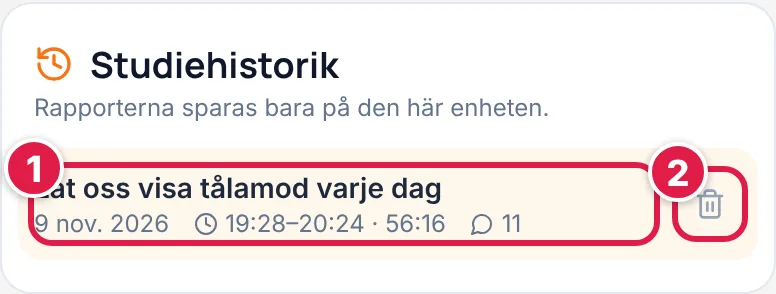
Listan över sparade studier, under rapporten.
Tryck på ett studium för att se dess rapport. Den visar datum, klockslag, längd och kommentarer.
Papperskorg: för att radera en rapport. Tryck en gång och bekräfta sedan med ”Radera?”.
Rapporterna sparas bara på den här enheten, aldrig på internet. Upp till 100 studier sparas. Om du rensar webbläsarens eller appens data försvinner historiken.
Du kan också öppna historiken från kortet ”Studiehistorik” på startskärmen.
Andra möjligheter
Under planen hittar du också tidsstatistiken för varje stycke.
Med export-knappen ⬇ överst kan du spara studieplanen som bild eller PDF.
För att förbereda ett nytt studium trycker du på börja om↻.
16Vanliga frågor
Kan jag leda genom att läsa styckena och frågorna i appen?
Nej. Appen visar dem bara för att beräkna tiderna. När du leder använder du alltid JW Library eller den tryckta Vakttornet.
Varför laddades Vakttornet ner på ett annat språk?
Tidskriften laddas ner på appens språk. Byt språk med jordglobsknappen och tryck på ”Ladda ner tidskriften från jw.org” igen.
Det står att artikelns format inte kändes igen.
Använd den officiella PDF:en av Vakttornet, studieupplagan, nedladdad från jw.org (knappen ”Ladda ner tidskriften från jw.org” gör det åt dig). Skannade PDF:er eller PDF:er gjorda av skärmbilder kan inte läsas.
Den hittar inte veckans artikel i tidskriften.
Kontrollera att den valda veckan hör till det numret av tidskriften. Om inte visar appen den närmaste artikeln och låter dig välja en annan vecka.
Behöver jag internet under studiet?
Bara för att ladda ner tidskriften. När artikeln är inladdad fungerar timern utan nätverk.
Jag kom sent eller började sent. Vad gör jag?
Öppna stycket ni är på och tryck på ”Börja härifrån”. Appen fördelar den återstående tiden.
Det offentliga föredraget drog över.
Innan du börjar trycker du på ”Ändra sluttid” och anger när studiet måste sluta för att mötet ska sluta i tid. Appen kortar allt för att bli klar vid den tiden. Det här alternativet gör bara studiet kortare: aldrig längre. Om du har angett när det offentliga mötet börjar i Inställningar behöver du inte göra det: appen gör det åt dig.
Varningarna hörs inte.
Kontrollera under Inställningar → Varningar att de är påslagna, tryck på ”Testa ljudet” och se till att telefonen inte är på ljudlöst.
Vilka data sparar appen?
Bara dina inställningar och de tidskrifter du väljer att spara, och alltid på din enhet. Det finns inga konton och inga data skickas till någon server. Mer information finns i integritetspolicyn.
Var kan jag se studierna från andra veckor?
I studiehistoriken: tryck på ”Studiehistorik” när du avslutar ett studium, eller använd det gröna kortet på startskärmen.
Kan jag radera en rapport?
Ja. I historiken trycker du på papperskorgen bredvid studiet och bekräftar sedan med ”Radera?”.
Varför varade avslutningen längre än planerat?
Om det finns tid kvar efter repetitionen får avslutningen den tiden, så att du blir klar i tid. Rapporten visar det under ”Avslutning”.
Hur får jag veta vad som är nytt?
När det finns en ny version visas ett meddelande med ”Uppdatera”. Appen laddar aldrig om sig själv: om du leder trycker du på det när du är klar. Då ser du ett fönster med det som har ändrats. Du kan se det igen under Inställningar → Nyheter.
Jag glömde att trycka på ”Nästa” och vi är redan på ett annat stycke.
Öppna stycket ni är på och tryck på ”Börja härifrån”. Appen hoppar till det stycket utan att nollställa klockan: den behåller sluttiden och fördelar den återstående tiden på styckena som är kvar.